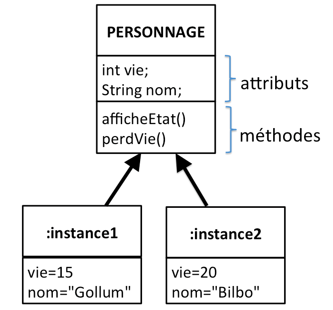

Il est possible de passer des paramètres au constructeur d'une classe.
Le passage de paramètres se fait au moment de la création de l'instance :
Saisissez, analysez et testez ce code
Personnage gollum;
Personnage bilbo;
class Personnage {
int vie;
// le constructeur
Personnage(int nbrVie){
vie=nbrVie;
}
}
void setup() {
gollum = new Personnage(15);
bilbo = new Personnage(20);
println ("Bilbo a "+bilbo.vie+" points de vie");
println ("Gollum a "+gollum.vie+" points de vie");
println ("Bilbo est blessé par Gollum");
bilbo.vie=bilbo.vie-1;
println ("Bilbo a "+bilbo.vie+" points de vie");
println ("Gollum a "+gollum.vie+" points de vie");
}
Quelques explications sur l'exemple du "À faire vous-même 4.1" :
Au moment de la création de l'instance gollum, on passe comme argument le nombre de vies (gollum = new Personnage(15);). Ce nombre de vies est attribué au premier argument du constructeur, la variable nbreVie. Il est donc possible d'attribuer un nombre de points de vie différents à chaque personnage.
Ensuite, on attribue la valeur contenue dans la variable nbreVie à l'attribut vie (ligne "vie=nbrVie;")
Bien évidemment, nous pouvons passer plusieurs arguments au constructeur, nous verrons un exemple dans un instant.
Nous voyons encore se "balader" des "gollum.vie" en dehors de la classe (notamment dans bilbo.vie= bilbo.vie-1 ou encore dans les lignes qui permettent d'afficher le nombre de vies restantes), cela n'est pas une bonne pratique et autant que faire se peut, il faut éviter ce genre de chose .
Pour résoudre ce problème, nous allons créer 2 nouvelles méthodes :
Saisissez, analysez et testez ce code
Personnage gollum;
Personnage bilbo;
class Personnage {
int vie;
String nom;
// le constructeur
Personnage(int nbrVie, String nomPerso){
vie=nbrVie;
nom=nomPerso;
}
//méthode qui affiche l'état du personnage
void afficheEtat(){
println ("Il reste "+vie+" points de vie à "+nom);
}
// méthode qui enlève un point de vie au personnage concerné
void perdVie (){
println (nom+" subit une attaque, il perd une vie");
vie=vie-1;
}
}
void setup() {
gollum = new Personnage(15, "Gollum");
bilbo = new Personnage(20, "Bilbo");
gollum.afficheEtat();
bilbo.afficheEtat();
bilbo.perdVie();
bilbo.afficheEtat();
}
Vous aurez compris par vous-même que pour appeler la méthode "perdVie" pour l'instance "bilbo", il suffit d'écrire "bilbo.perdVie();".
Voilà, nous arrivons enfin, dans l'exemple du "À faire vous-même 4.2", à un programme qui respecte les principes de la programmation orientée objet (pas de "bilbo.vie;" à l'extérieur de la classe). En dehors de la création des classes, un bon programme orienté objet, ne sera qu'une suite de création d'instances et d'appels de méthode pour ces instances.
Afin de rendre les choses plus lisibles, il est recommandé de représenter schématiquement les classes et, éventuellement, les instances issues de ces classes. Cette représentation schématique est normalisée, voici un exemple de représentation.
